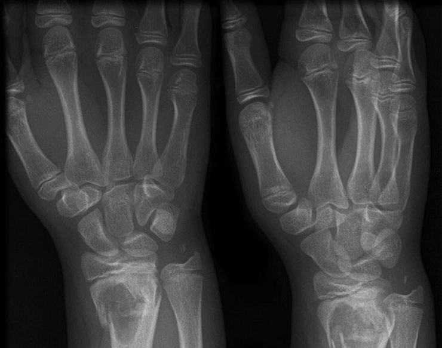
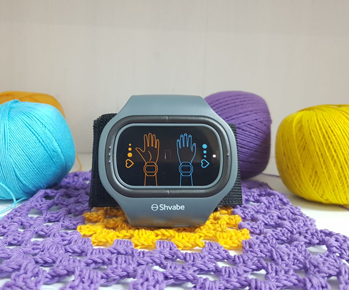

-
 ЕлицаПрочети за 10 минути
ЕлицаПрочети за 10 минути
Как да се отървем от хипотония без хапчета и инжекции?
Здравейте, скъпи мои.
Преди една година водех домашен начин на живот: силите едва ми стигаха за работата и минимум домакинска работа. Хроничната умора, мъчителното главоболие, гаденето и други спътници на хипотонията ме превърнаха в една неподвижна баба много преди да се пенсионирам. Сега съм на 54 години. Сутрин тичам, ходя на фитнес, занимавам се с конна езда и сериозно мисля да се науча да сърфирам. И всичко това, защото преди една година намерих начин да се отърва от хипотонията веднъж и завинаги.

Всичко започна с гаденето
От детски години постоянно ми ставаше лошо. За никакво четене в транспорта не можеше и дума да става: толкова лошо ми беше, че дори не можех да говоря. Единственият начин да стигна до определено място и, моля за извинение, да не си изповръщам червата, бяха хапчетата.
След 30-годишна възраст към това мъчение се прибави и главоболието. Не мога да кажа, че това е обикновена болка, замайване или притискане в слепоочията. Това беше истинско усещане, че черепната ми кутия е в наковалня. В същото време в ушите ми работеше перфоратор, пред очите ми избухваха фойерверки, а аз започнах да приличам на малко на планетата ни: зелена и въртяща се около оста си.
Беше ми лошо, всичко наоколо плуваше, припадах. Хапчета, вода — всичко, което се опитваше да влезе в тялото ми, като фонтан изскачаше обратно. Това състояние трябваше да се изтърпи само в легнало положение. Почти 24 часа без да мърдам и отново съм нормален човек.
До 45-годишна възраст такива пристъпи се случваха веднъж на година и половина. Когато наближих 50-те, те станаха по-чести: това се превърна в сериозен проблем, който много ми пречеше в живота.
 Ниското кръвно налягане за мен стана нормално състояние
Ниското кръвно налягане за мен стана нормално състояние
Самолечение: възходи и падения с увреждания
Народните методи за борбата срещу хипотонията са променливо и опасно явление. Някои начини наистина помагат при спешни случаи (например двойно кафе), а някои наистина осакатяват.
Спрях да се занимавам със самолечение, когато рязък прилив на сила след взимането на натурална енергийна напитка ме доведе до травмата.
 Счупване заради хипотония – това вече е прекалено!
Счупване заради хипотония – това вече е прекалено!
Заради дъжда се чувствах ужасно и не можех да се стана, за да отида на работа. Главата ми сякаш щеше да се пръсне, като кората на сух орех. В това състояние е невъзможно да заспиш, така че трябваше да се стегна и да се втурна по работата си.
Домашно капучино, няколко хапчета от мигрена и елеутерокок с една глътка ми помогнаха да си отворя очите си и дори ми повдигнаха настроението. Чувствах се неестествено жизнена и енергична, мозъчната ми дейност кипеше по-силно от вулканична лава.
В това състояние прекарах около три часа. На четвъртия, исках да отпразнувам малката си победа над хипертоничната болест. Обърнах се към кафемашината, направих няколко крачки и припаднах. Така се случи първото ми счупване в живота: паднах върху ръката си, нараних две стави на ръката си и се заклех повече никога да не експериментирам.
 Снимка на китката
Болест, която не се взема на сериозно
Винаги съм имал ниско кръвно налягане, но не ми поставиха такава диагноза. На оплакванията ми от ужасната зависимост от времето ми дадоха медицинска препоръка да почивам повече, по-малко да се нервирам и от време на време да пия кафе за терапия.
Най-неприятното нещо при хипотонията е, че за нея не съществуват лекарства. Има хапчета за главоболие (те не помагат, но има), за гадене, от морска болест, а хапчета за хипотония все още не са измислили. Но пък са изобретили уред, който по-добре от всички лекарства дава прилив на сила, облекчава главоболието, изравнява кръвното налягане и, всъщност, спасява от хипотонията.
 При хипотонията кръвоносните съдове се стесняват, кръвообращението се забавя, настъпва кислороден глад
При хипотонията кръвоносните съдове се стесняват, кръвообращението се забавя, настъпва кислороден глад
Спасение за хипотониците
Колежката, която ми извика линейка и ми помогна да се съвзема след припадъка, ми разказа за коректора на кръвното налягане АВР-051. Това е апарат, който тонизира стеснените кръвоносни съдове на хипотониците чрез токови импулси. За хората те практически не се усещат, но спасяват ялото от много болести. Терапията с ток помага добре при
- главоболие, мигрени;
- хронична умора;
- нарушен сън;
- нервност, раздразнителност;
- тахикардии;
- сърдечно-съдови заболявания.
Слабо вярвах в успеха на това събитие, но взех от колежката коректора да го пробвам. След две седмици, когато все още бях в болнични, доброволно отидох в офиса и с едната си ръка за няколко часа свърших толкова работа, колкото по рано с две не можех да свърша.

Господи, най-накрая имам сили! Започнах да се събуждам сутрин отпочинала и спрях да мечтая цял ден как да си полегна. През този период се паднаха няколко дъждовни дни, но в нито един от тях не ме заболя главата. От метеорологична станция на крака се превърнах в обикновен човек с нормално кръвно налягане – човек, пълен със сила и неустоимо желание да правя всичко, на което преди не ми стигаха силите.
От къде може да се вземе устройство против хипотония
Разбира се, че си поръчах коректор за кръвно налягане. Според инструкциите курсът на лечение е само две седмици (а аз го минах с устройството на колежката и вече се чувствах по-добре).
За да се поддържа здравето, желателно е курсът да се повтаря на всеки 4-6 месеца. Все пак, ние ежедневно сме подложени на физически и морални натоварвания, стресирани сме и не винаги се храним добре. Ето защо, в домашната аптечката коректорът е нещо незаменимо. Може да се използва от време на време (когато имате главоболие, например) и за лечение на редица други заболявания.

За това, какви други заболявания лекува АВР, можете да прочетете на сайта на производителя. Там можете и да поръчате това вълшебно устройство до има промоция.
Искрено желая здраве на всеки читател.
Отиди на сайта на производителя на коректора на кръвното налягане


Weekly Newsletter
Абонирайте се за независими новини
от най-добрите блогъри на LiveJournal